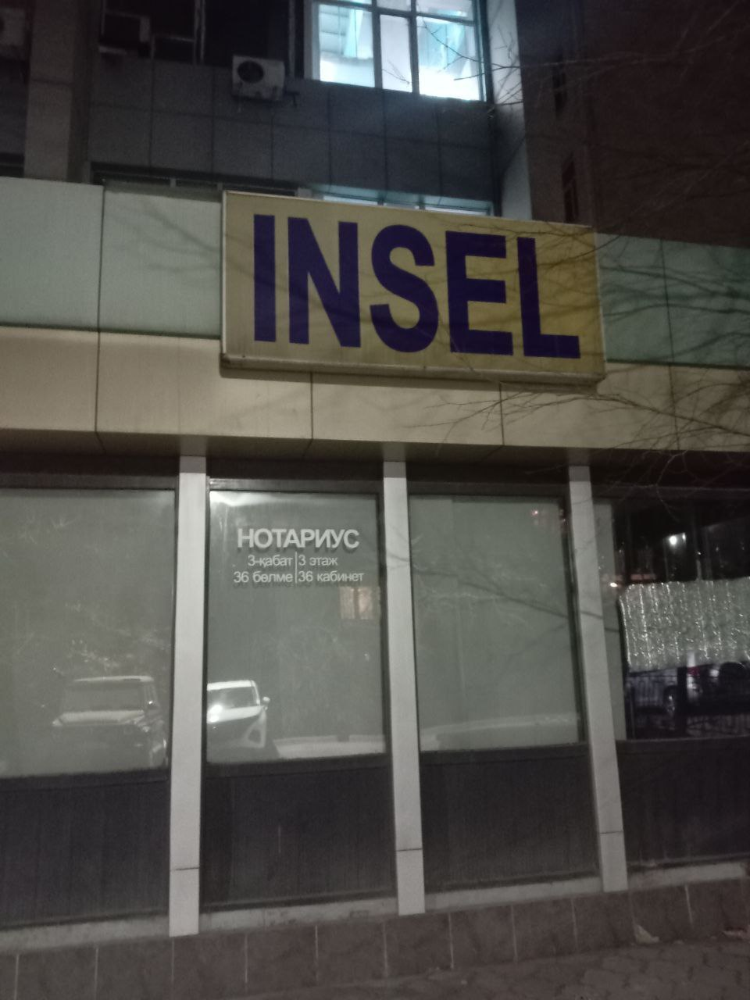

Сергей Трощенков. Без названия. Москва, Россия
Лет 7 назад моя подруга из музея гараж просила рассказать ей странных кринжовых историй про художников, потому что ночные монтажи и кураторская работа располагают к безумию. Я отказался, сославшись на то, что большинство ещё живо. Эту фотку я сделал, когда гулял по Ате с другом, никаких имен и отсылок не будет именно по этой причине, но он рассказывал, что это компьютерный клуб для гиков, которые лет 25 назад только учились собирать компы и давить код на питоне. Мне показалось, что в названии, скорее опечатка, чем что то еще, так что я был в полном восторге
- - -